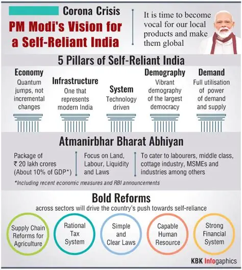

About the Mission
Atmanirbhar Bharat Abhiyan is an initiative launched by the government of India in 2020 to make India self-suffcient and reduce import dependency. It encourages innovation, entrepreneurship and local manufacturing.

Key Pillars of Atmanirbhar Bharat
- Economy
- Infrastructure
- Technology-Driven System
- Demograpy
- Demand

How Youth can contribute
India's youth can contribute by learning new skills, supporting local startups, innovating in science & technology, and using Make in India products.